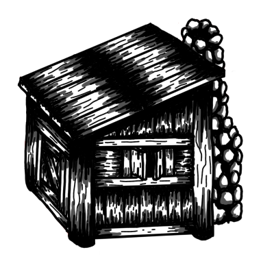
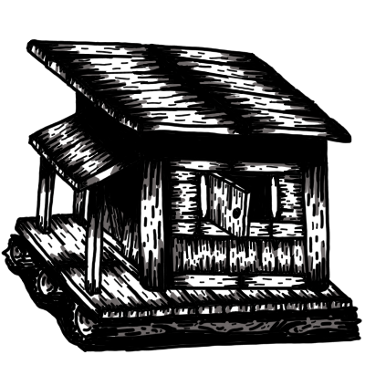
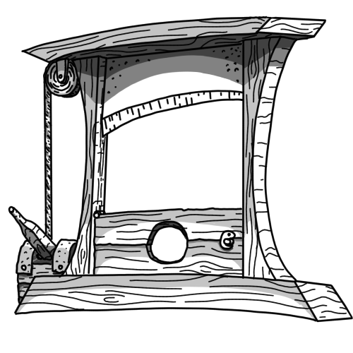
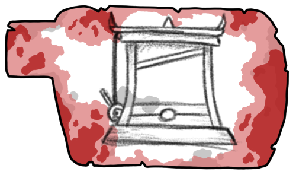
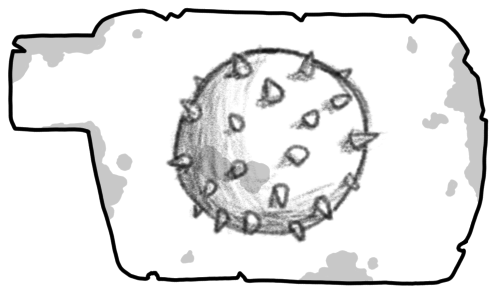

Teen pelejä harrastuksena. Unity on pelimoottori, jota parhaiten osaan, mutta olen myös jonkin verran tutkaillut Godottia. Seawall demo on ainoa tuote, jonka olen tähän mennessä julkaissut, mutta Rock, Paper and Guillotine on tulossa.




Seawall
Seawall on synkkä, maailmanlopun jälkeiseen aikaan sijoittuva strategiapeli. Pelaaja ottaa muurikapteenin roolin ja puolustaa ihmiskuntaa kuivuneen meren pohjalta ryömivien epäsikiöiden hyökkäykseltä. Luvassa on selviytymiskauhua ainutlaatuisessa ympäristössä, ainutlaatuista vihollista vastaan.
Pelin Sivut →Rock, Paper and Guillotine
Vielä tekeillä oleva tuotos. Projekti lähti tylsästä sunnuntaista kun huvikseni koodasin kivi-paperi-sakset-pelin. Aloin hiljalleen viedä tekelettä eteenpäin ja nyt se on rogue like peli, jossa pelaaja taistelee hengestään tappavissa kivi-paperi-sakset peleissä. Tämä on ollut erittäin hauska pelisuunnittelun haaste. Miten saada näin yksinkertaisesta pelistä mieleniintoista.




Rock, Paper and Guillotine
Vielä tekeillä oleva tuotos. Projekti lähti tylsästä sunnuntaista kun huvikseni koodasin kivi-paperi-sakset-pelin. Aloin hiljalleen viedä tekelettä eteenpäin ja nyt se on rogue like peli, jossa pelaaja taistelee hengestään tappavissa kivi-paperi-sakset peleissä. Tämä on ollut erittäin hauska pelisuunnittelun haaste. Miten saada näin yksinkertaisesta pelistä mieleniintoista.